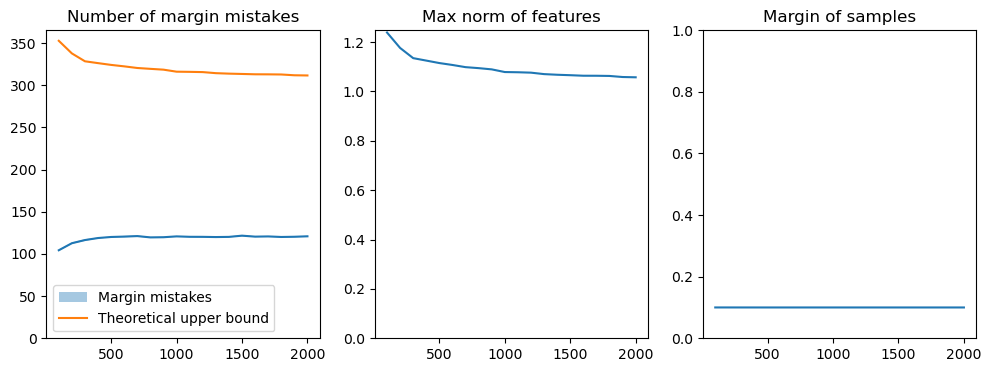
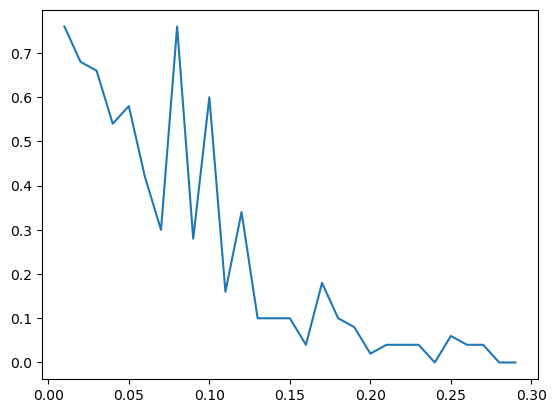

TD 1: Single Layer Perceptron#
Goals:
check that everyone can run a notebook with appropriate config
play around with the single-layer perceptron
Hédi Hadiji, with bits from Odalric Ambryn-Maillard.
December 2024
# Imports
import sys
import torch
import torch.nn as nn
import torch.nn.functional as F
import torch.optim as optim
import numpy as np
import random
from copy import deepcopy
import time
import matplotlib.pyplot as plt
If necessary: install pytorch by running
pip3 install torch
(in a a virtual environment)
print(f"python --version = {sys.version}")
print(f"torch.__version__ = {torch.__version__}")
print(f"np.__version__ = {np.__version__}")
python --version = 3.11.5 (main, Sep 11 2023, 08:31:25) [Clang 14.0.6 ]
torch.__version__ = 2.0.1
np.__version__ = 1.26.0
Torch 101#
“The torch package contains data structures for multi-dimensional tensors and defines mathematical operations over these tensors. Additionally, it provides many utilities for efficient serializing of Tensors and arbitrary types, and other useful utilities. […] provides classes and functions implementing automatic differentiation of arbitrary scalar valued functions.” PyTorch
Variable types#
# Very similar syntax to numpy.
zero_torch = torch.zeros((3, 2))
print("zero_torch is of type {:s}".format(str(type(zero_torch))))
# Torch -> Numpy: simply call the numpy() method.
zero_np = np.zeros((3, 2))
assert (zero_torch.numpy() == zero_np).all()
# Numpy -> Torch: simply call the corresponding function on the np.array.
zero_torch_float = torch.FloatTensor(zero_np)
print("\nFloat:\n", zero_torch_float)
zero_torch_int = torch.LongTensor(zero_np)
print("Int:\n", zero_torch_int)
zero_torch_bool = torch.BoolTensor(zero_np)
print("Bool:\n", zero_torch_bool)
# Reshape
print("\nView new shape...", zero_torch.view(1, 6))
# Note that print(zero_torch.reshape(1, 6)) would work too.
# The difference is in how memory is handled (view imposes contiguity).
# Algebra
a = torch.randn((3, 2))
b = torch.randn((3, 2))
print("\nAlgebraic operations are overloaded:\n", a, "\n+\n", b, "\n=\n", a + b)
# More generally, torch shares the syntax of many attributes and functions with Numpy.
zero_torch is of type <class 'torch.Tensor'>
Float:
tensor([[0., 0.],
[0., 0.],
[0., 0.]])
Int:
tensor([[0, 0],
[0, 0],
[0, 0]])
Bool:
tensor([[False, False],
[False, False],
[False, False]])
View new shape... tensor([[0., 0., 0., 0., 0., 0.]])
Algebraic operations are overloaded:
tensor([[-0.0514, 0.6854],
[-1.2533, -1.3239],
[-0.0809, -0.4531]])
+
tensor([[-0.6086, -0.8841],
[-0.6804, -1.0071],
[ 0.4571, -1.7025]])
=
tensor([[-0.6600, -0.1987],
[-1.9337, -2.3310],
[ 0.3762, -2.1556]])
Gradient management#
# torch.Tensor is a similar yet more complicated data structure than np.array.
# It is basically a static array of number but may also contain an overlay to
# handle automatic differentiation (i.e keeping track of the gradient and which
# tensors depend on which).
# To access the static array embedded in a tensor, simply call the detach() method
print(zero_torch.detach())
# When inside a function performing automatic differentiation (basically when training
# a neural network), never use detach() otherwise meta information regarding gradients
# will be lost, effectively freezing the variable and preventing backprop for it.
# However when returning the result of training, do use detach() to save memory
# (the naked tensor data uses much less memory than the full-blown tensor with gradient
# management, and is much less prone to mistake such as bad copy and memory leak).
# We will solve theta * x = y in theta for x=1 and y=2
x = torch.ones(1)
y = 2 * torch.ones(1)
# Actually by default torch does not add the gradient management overlay
# when declaring tensors like this. To force it, add requires_grad=True.
theta = torch.randn(1, requires_grad=True)
# Optimisation routine
# (Adam is a sophisticated variant of SGD, with adaptive step).
optimizer = optim.Adam(params=[theta], lr=0.1)
# Loss function
print("Initial guess:", theta.detach())
for _ in range(100):
# By default, torch accumulates gradients in memory.
# To obtain the desired gradient descent beahviour,
# just clean the cached gradients using the following line:
optimizer.zero_grad()
# Quadratic loss (* and ** are overloaded so that torch
# knows how to differentiate them)
loss = (y - theta * x) ** 2
# Apply the chain rule to automatically compute gradients
# for all relevant tensors.
loss.backward()
# Run one step of optimisation routine.
optimizer.step()
print("Final estimate:", theta.detach())
print("The final estimate should be close to", y)
tensor([[0., 0.],
[0., 0.],
[0., 0.]])
Initial guess: tensor([-0.9409])
Final estimate: tensor([1.9820])
The final estimate should be close to tensor([2.])
Setting up a Perceptron experiment#
1 - Data#
class ToyLinearData:
"""
Toy dataset generating linearly separable data with margin gamma.
"""
def __init__(self, n, d, gamma=0, w=None):
self.n = n
self.d = d
self.gamma = gamma
if w is None:
w = torch.normal(torch.zeros(d))
self.w = w / torch.linalg.norm(w)
self.features = torch.zeros((n, d))
self.labels = torch.zeros((n))
self.max_norm = 0
self.w_margin = 1e10
self.fill_data()
def fill_data(self):
for i in range(self.n):
x, y = self.new_example()
self.features[i, :] = x
self.labels[i] = y
self.max_norm = max(torch.norm(x), self.max_norm)
self.w_margin = min(abs(torch.dot(self.w, x)), self.w_margin)
def new_example(self):
"""
Generates a gaussian vector with zero mean and identity / sqrt(d) covariance, then
moves it in the direction of w or in the opposite direction, to guarantee margin.
"""
# Gaussian vectors typically have norm around sqrt(d), so we normalise
x = torch.normal(torch.zeros(self.d)) / np.sqrt(self.d)
value = torch.dot(x, self.w)
if value >= 0:
x = x + self.gamma * self.w
y = 1
elif value < 0:
x = x - self.gamma * self.w
y = -1
return x, y
def __len__(self):
return self.n
class ToySphericalData:
"""
Generate toy data that is not linearly separable
"""
def __init__(self, n, d, max_rad=1, threshold_rad=0.5):
self.n = n
self.d = d
self.features = torch.zeros((n, d))
self.labels = torch.zeros((n))
self.max_rad = max_rad
self.threshold_rad = threshold_rad
self.fill_data()
def fill_data(self):
for i in range(self.n):
r = np.random.rand() * self.max_rad
x = torch.normal(torch.zeros(d))
x = r / torch.norm(x) * x
self.features[i, :] = x
if r > self.threshold_rad:
self.labels[i] = 1
else:
self.labels[i] = -1
def __len__(self):
return self.n
def plot_data(data):
"Scatter plot for d = 2. Quite slow"
for i in range(len(data)):
if data.labels[i] == 1:
plt.scatter(
data.features[i][0], data.features[i][1], color="blue"
) # , label='+1')
else:
plt.scatter(
data.features[i][0], data.features[i][1], color="red"
) # , label='-1')
n = 200
d = 2
gamma = 0
data = ToyLinearData(n, d, gamma=gamma)
print(f"Margin of w : {data.w_margin: .4f}")
print(f"Max norm : {data.max_norm: .4f}")
print(f"True w : {data.w}")
plot_data(data)
plt.axline(
(0, 0), slope=-data.w[0] / data.w[1], color="C0", alpha=0.5, label="True Hyperplane"
)
plt.axis("equal")
Margin of w : 0.0047
Max norm : 2.7519
True w : tensor([-0.8669, 0.4984])
(-2.7494038701057435,
2.3645207047462464,
-1.7530826807022095,
1.887318778038025)
n = 500
d = 2
data = ToySphericalData(n, d)
plot_data(data)
plt.axis("equal")
(-1.0616033583879472,
1.0836855083703996,
-1.0741125226020813,
1.0685838341712952)
2 - Implementing the Perceptron#
class Perceptron:
"""
Single-layer Perceptron
"""
def __init__(self, dim):
self.dim = dim
self.w = torch.zeros(dim)
self.margin_mistake_counter = 0
def predict(self, x):
if torch.dot(self.w, x) > 0:
return 1
else:
return -1
def update_margin_mistake(self, x, y):
self.w += y * x
self.margin_mistake_counter += 1
def train_perceptron(alg, data, t_lim=100_000):
converged = False
t = 0
while not (converged) and t < t_lim:
shuffled_indices = np.arange(len(data))
# np.random.shuffle(shuffled_indices)
clean_pass = True
for i in shuffled_indices:
x, y = data.features[i], data.labels[i]
if torch.dot(alg.w, x) * y < 1:
alg.update_margin_mistake(x, y)
clean_pass = False
t += 1
if clean_pass:
converged = True
return converged
n = 100
d = 2
gamma = 0.5
data = ToyLinearData(n, d, gamma=gamma)
alg = Perceptron(d)
3 - Testing the Perceptron#
n = 20
d = 2
gamma = 0.1
data = ToyLinearData(n, d, gamma=gamma)
alg = Perceptron(d)
Run the code below a few times to see how the Perceptron behaves.#
You can restart and initialize the algorithm again by running the cell above.
plot_data(data)
i = np.random.randint(len(data))
x, y = data.features[i], data.labels[i]
plt.scatter(x[0], x[1], marker="x", s=100, label="Point selected")
plt.axline(
(0, 0),
slope=-alg.w[0] / alg.w[1],
color="violet",
alpha=0.5,
label="Hyperplane Before",
)
if torch.dot(alg.w, x) * y < 1:
alg.update_margin_mistake(x, y)
print("Point selected leads to a margin mistake")
else:
print("Point selected is well classified with a margin: no update")
plt.axline(
(0, 0),
slope=-alg.w[0] / alg.w[1],
color="orange",
alpha=0.5,
label="Hyperplane After",
)
plt.axline(
(0, 0),
slope=-data.w[0] / data.w[1],
color="green",
alpha=0.5,
label="True Hyperplane",
)
print("Normalized Alg w :", alg.w / torch.norm(alg.w))
print("True w: ", data.w)
plt.legend()
plt.axis("equal")
plt.show()
Point selected leads to a margin mistake
Normalized Alg w : tensor([-0.8075, 0.5899])
True w: tensor([-0.8373, -0.5468])
Non-separable data#
n, d = 100, 2
data = ToySphericalData(n, d)
plot_data(data)
i = np.random.randint(len(data))
x, y = data.features[i], data.labels[i]
plt.scatter(x[0], x[1], marker="x", s=100, label="Point selected")
plt.axline(
(0, 0),
slope=-alg.w[0] / alg.w[1],
color="violet",
alpha=0.5,
label="Hyperplane Before",
)
if torch.dot(alg.w, x) * y < 1:
alg.update_margin_mistake(x, y)
print("Point selected leads to a margin mistake")
else:
print("Point selected is well classified with a margin: no update")
plt.axline(
(0, 0),
slope=-alg.w[0] / alg.w[1],
color="orange",
alpha=0.5,
label="Hyperplane After",
)
print("Alg w :", alg.w)
# print('True w: ', data.w)
plt.legend()
plt.axis("equal")
plt.show()
Point selected leads to a margin mistake
Alg w : tensor([-1.1600, 0.7374])
Just run the algorithm in higher dim to check#
n, d, gamma = 1000, 30, 0
data = ToyLinearData(n, d, gamma=gamma)
alg = Perceptron(d)
converged = train_perceptron(alg, data, t_lim=1_000_000)
print(f"Converged: {converged}")
print(alg.w)
print(torch.norm(alg.w))
print(alg.w / torch.norm(alg.w))
print(data.w)
print(torch.norm(data.w - alg.w / torch.norm(alg.w)) / np.sqrt(d))
Converged: False
tensor([-46.7282, -3.9107, 83.0962, -67.5819, -14.6224, -43.7595, -17.4025,
-20.5482, -19.9159, 9.2564, 73.7440, -49.1259, -7.4371, -21.8473,
16.8057, -35.3840, 5.8471, -23.7800, 6.7526, 59.3025, 45.7770,
-16.6924, -4.9025, -30.8882, 61.3540, 63.3324, -21.5427, -3.9171,
31.8418, 17.9989])
tensor(209.8398)
tensor([-0.2227, -0.0186, 0.3960, -0.3221, -0.0697, -0.2085, -0.0829, -0.0979,
-0.0949, 0.0441, 0.3514, -0.2341, -0.0354, -0.1041, 0.0801, -0.1686,
0.0279, -0.1133, 0.0322, 0.2826, 0.2182, -0.0795, -0.0234, -0.1472,
0.2924, 0.3018, -0.1027, -0.0187, 0.1517, 0.0858])
tensor([-0.2312, -0.0047, 0.3809, -0.3119, -0.0805, -0.2136, -0.0809, -0.0951,
-0.0982, 0.0396, 0.3587, -0.2341, -0.0330, -0.1096, 0.0773, -0.1656,
0.0304, -0.1085, 0.0360, 0.2847, 0.2266, -0.0797, -0.0175, -0.1495,
0.2981, 0.2975, -0.0944, -0.0142, 0.1555, 0.0962])
tensor(0.0066)
n, d = 200, 10
data = ToySphericalData(n, d)
alg = Perceptron(d)
converged = train_perceptron(alg, data, t_lim=100_000)
print(f"Converged: {converged}")
print(alg.w / torch.norm(alg.w), torch.norm(alg.w))
Converged: False
tensor([-0.4546, -0.1714, -0.3691, 0.2007, 0.1699, -0.4960, 0.4544, -0.1152,
-0.1552, 0.2622]) tensor(4.0640)
2 - Optimization of the Perceptron#
ds = [100 * (i + 1) for i in range(20)]
n_ds = len(ds)
N_mc = 20
all_mistakes = np.zeros((n_ds, N_mc))
n = 1000
gamma = 0.1
norms = np.zeros((n_ds, N_mc))
margins = np.zeros((n_ds, N_mc))
all_converged = True
for i, d in enumerate(ds):
for j in range(N_mc):
data = ToyLinearData(n, d, gamma=gamma)
alg = Perceptron(d)
converged = train_perceptron(alg, data, t_lim=100_000)
if not (converged):
print("Perceptron did not converge")
all_converged = converged and all_converged
all_mistakes[i, j] = alg.margin_mistake_counter
norms[i, j] = data.max_norm
margins[i, j] = data.w_margin
avg_mistakes = np.mean(all_mistakes, axis=1)
std_mistakes = np.std(all_mistakes, axis=1) / np.sqrt(N_mc)
fig, axs = plt.subplots(1, 3, figsize=(12, 4))
plt.title("d varies")
axs[0].set_title("Number of margin mistakes")
axs[0].plot(ds, avg_mistakes)
axs[0].fill_between(
ds,
(avg_mistakes - std_mistakes),
(avg_mistakes + std_mistakes),
alpha=0.4,
label="Margin mistakes",
)
mean_margins = np.mean(margins, axis=1)
axs[0].plot(
ds,
(2 + np.mean(norms, axis=1) ** 2) / mean_margins**2,
label="Theoretical upper bound",
)
axs[0].set_ylim(0)
axs[0].legend()
axs[1].set_title("Max norm of features")
axs[1].plot(ds, np.mean(norms, axis=1))
axs[2].set_title("Margin of samples")
mean_margins = np.mean(margins, axis=1)
axs[2].plot(ds, mean_margins)
axs[1].set_ylim(0)
axs[2].set_ylim(0, max(1, max(mean_margins)))
plt.show()

2- Generalization#
n = 10
d = 10
gamma = 0.1
data = ToyLinearData(n, d, gamma=gamma)
alg = Perceptron(d)
converged = train_perceptron(alg, data, t_lim=100_000)
def test(alg, data, N_test):
"""
Generates a test set and returns the average
error on this test set.
"""
score = torch.zeros(N_test)
for j in range(N_test):
x, y = data.new_example()
score[j] = alg.predict(x) * y
return 1 - torch.mean(score)
gammas = [0.01 * i for i in range(1, 30)]
n_train = 10
d = 50
n_gammas = len(gammas)
N_test = 100
errors = torch.zeros(n_gammas)
for i, gamma in enumerate(gammas):
data = ToyLinearData(n_train, d, gamma=gamma)
alg = Perceptron(d)
converged = train_perceptron(alg, data, t_lim=1_000_000)
if not (converged):
print("Perceptron did not converge")
errors[i] = test(alg, data, N_test)
plt.plot(np.array(gammas), errors)
plt.show()

n_trains = [10 * i for i in range(20)]
d = 100
gamma = 0.0
number_of_trainings = len(n_trains)
N_test = 500
errors = torch.zeros(number_of_trainings)
for i, n_train in enumerate(n_trains):
data = ToyLinearData(n_train, d, gamma=gamma)
alg = Perceptron(d)
converged = train_perceptron(alg, data, t_lim=1_000_000)
if not (converged):
print("Perceptron did not converge")
errors[i] = test(alg, data, N_test)
plt.plot(n_trains, errors)
[<matplotlib.lines.Line2D at 0x1652f1c10>]